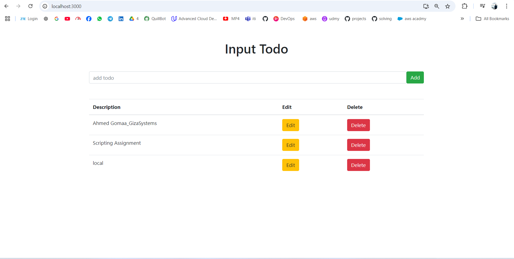

This project is a full-stack Task Tracker web application, built using the PERN stack (PostgreSQL, Express, React, Node.js). The application features basic CRUD (Create, Read, Update, Delete) functionality for managing tasks. It integrates a React frontend with a Node.js backend, and the data is stored in a PostgreSQL database. The app is containerized with Docker and includes automation scripts for deployment and management on a cloud virtual machine (VM).
| Method | Endpoint | Description |
|---|---|---|
| GET | /api/tasks |
Retrieve all tasks |
| GET | /api/tasks/:id |
Retrieve a task by ID |
| POST | /api/tasks |
Create a new task |
| PUT | /api/tasks/:id |
Update a task by ID |
| DELETE | /api/tasks/:id |
Delete a task by ID |
.
├── Dockerfile # Dockerfile backend
├── client/ # Frontend directory
│ ├── Dockerfile # Dockerfile for frontend service
│ ├── package-lock.json
│ ├── package.json # Frontend dependencies
│ ├── public/
│ └── src/
│ ├── App.css
│ ├── App.js # Main React component
│ ├── components/ # Reusable React components
│ ├── index.css
│ └── index.js
├── db.js # PostgreSQL connection
├── docker-compose.yml # Docker Compose file for backend, frontend, and PostgreSQL
├── index.js # Express.js backend entry point
├── init.sql # SQL file to initialize database and table
├── package-lock.json
├── package.json # Backend dependencies
├── scripts/ # Automation scripts for Docker
│ ├── build.sh # Script to build Docker images
│ ├── run.sh # Script to run Docker containers
│ ├── stop.sh # Script to stop containers
│ ├── install-docker.sh # Script to install Docker and Docker Compose
│ └── backup.sh # Script to back up the database
├── crontab.txt # cron job for automating daily backups
git clone https://github.com/gAhmedg/Scripting_Assignment.git
cd todo-app
.env file to configure database settings:DB_HOST=db
DB_USER=postgres
DB_PASSWORD=yourpassword
DB_NAME=tasks_db

Dockerfiles for the backend and frontend services.# Dockerfile for backend
FROM node:12.12.0-alpine
WORKDIR /usr/src/app
COPY package*.json ./
COPY .env ./
RUN npm i
COPY . .
EXPOSE 5000
RUN cd client && npm install && npm run build
CMD ["npm", "start"]
# Dockerfile for front
FROM node:12.12.0-alpine
WORKDIR /app
COPY package*.json ./
RUN npm i
COPY . .
EXPOSE 3000
CMD ["npm", "start"]
# docker-compose.yml
version: '3.8'
services:
postgres:
image: postgres:12-alpine
ports:
- "5432:5432"
environment:
POSTGRES_PASSWORD: 1234pass
volumes:
- db-volume:/var/lib/postgresql/data
- ./init.sql:/docker-entrypoint-initdb.d/init.sql
networks:
- todos-network
backend:
container_name: node_api
restart: unless-stopped
build:
context: .
dockerfile: Dockerfile
ports:
- "5000:5000"
depends_on:
- postgres
env_file:
- .env
networks:
- todos-network
frontend:
container_name: react
restart: unless-stopped
build:
context: ./client
dockerfile: Dockerfile
ports:
- "3001:3000"
stdin_open: true
depends_on:
- backend
networks:
- todos-network
networks:
todos-network:
volumes:
db-volume:
1- Build and Start the Services: In the root directory, run:
docker-compose up --build
2- Access the Application:
http://localhost:3001 in your browser.
http://localhost:5000/api/tasks.3- Stop the Application:
docker-compose down
build.sh)run.sh)stop.sh)
then make the exasiblechmod +x build.sh run.sh stop.sh
scp -i key.pem -r /todo-app ubuntu@your-ec2-ip:/home/ubuntu/
./scripts/build.sh
./scripts/run.sh


crontab -e
0 0 * * * /home/ubuntu/backup.sh